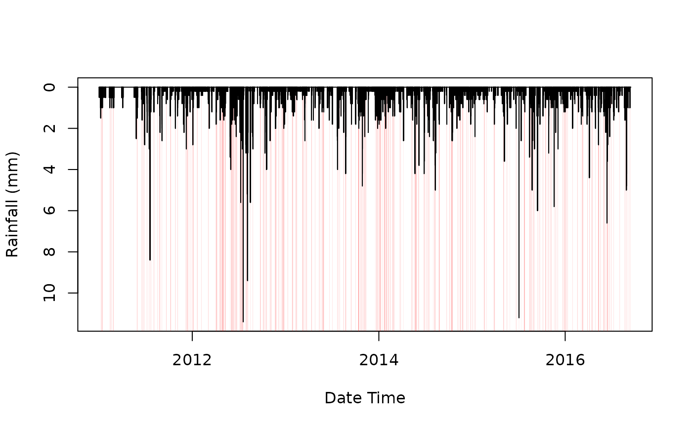

The rainSep() function uses run length encoding to find
consecutive rainfall periods. To avoid brief timesteps of no rain from
splitting events, the use of RcppRoll::roll_sum() can pad out the event d
urations.
Arguments
- dateTime
DateTime variable from time series.
- precip
Observed rainfall data.
- threshold
Used to tidy averaged and radar data where very low accumulations can be recorded, defaults to 0mm.
- minTotal
Used to help tidy the total number of events. Sets a minimum event total rainfall.
- roll
Number of time steps so use in the
RcppRoll::roll_sum().
Value
Function returns a data table with event ID, start and end times of the events, and the total accumulation for the events
Examples
## No accumulation applied, minimum total set to 2mm
rainSep(dateTime = chesterton$data$dateTime,
precip = chesterton$data$value,
threshold = 0,
minTotal = 2,
roll = 0)
#> id start end total
#> <int> <POSc> <POSc> <num>
#> 1: 1 2011-01-07 08:30:00 2011-01-07 10:00:00 6.5
#> 2: 2 2011-01-11 02:15:00 2011-01-11 03:00:00 2.0
#> 3: 3 2011-01-13 20:30:00 2011-01-13 22:15:00 5.0
#> 4: 4 2011-02-19 06:45:00 2011-02-19 08:30:00 4.0
#> 5: 5 2011-02-26 00:30:00 2011-02-26 01:15:00 3.0
#> ---
#> 861: 861 2022-09-09 14:30:00 2022-09-09 14:45:00 8.4
#> 862: 862 2022-09-09 15:30:00 2022-09-09 16:15:00 6.0
#> 863: 863 2022-09-26 10:00:00 2022-09-26 10:15:00 3.6
#> 864: 864 2022-09-30 14:15:00 2022-09-30 17:00:00 5.8
#> 865: 865 2022-09-30 18:00:00 2022-09-30 19:30:00 3.8
## 2 hr rolling accumulation
rainSep(dateTime = chesterton$data$dateTime,
precip = chesterton$data$value,
threshold = 0,
roll = 8)
#> id start end total
#> <int> <POSc> <POSc> <num>
#> 1: 1 2011-01-01 11:15:00 2011-01-01 13:00:00 0.5
#> 2: 2 2011-01-05 12:15:00 2011-01-05 15:00:00 1.0
#> 3: 3 2011-01-07 07:30:00 2011-01-07 10:45:00 6.5
#> 4: 4 2011-01-07 16:30:00 2011-01-07 18:30:00 1.5
#> 5: 5 2011-01-08 04:30:00 2011-01-08 06:15:00 0.5
#> ---
#> 3069: 3069 2022-09-26 17:45:00 2022-09-26 19:45:00 0.6
#> 3070: 3070 2022-09-29 02:15:00 2022-09-29 06:15:00 1.6
#> 3071: 3071 2022-09-30 00:45:00 2022-09-30 02:30:00 0.2
#> 3072: 3072 2022-09-30 13:15:00 2022-09-30 20:15:00 9.6
#> 3073: 3073 2022-09-30 21:45:00 2022-09-30 23:30:00 0.2
## Window plots
plot(chesterton$data$dateTime[1:200000], chesterton$data$value[1:200000],
ylim = rev(range(chesterton$data$value[1:200000], na.rm = TRUE)),
type = 'h', ylab = "Rainfall (mm)", xlab = "Date Time")
dayRain <- rainSep(dateTime = chesterton$data$dateTime[1:200000],
precip = chesterton$data$value[1:200000],
threshold = 0,
minTotal = 4,
roll = 20)
for (i in seq_along(dayRain$id)){
polygon(x = c(dayRain$start[i], dayRain$start[i], dayRain$end[i],
dayRain$end[i]),
y = c(0, 12, 12, 0),
col = scales::alpha('red', 0.5),
border = NA)
}
lines(chesterton$data$dateTime[1:200000], chesterton$data$value[1:200000])
